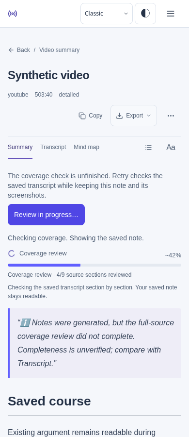
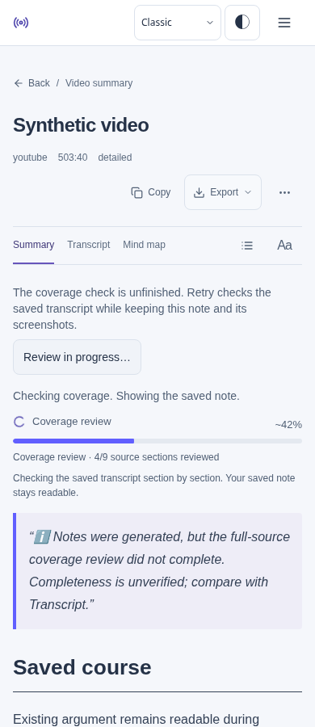
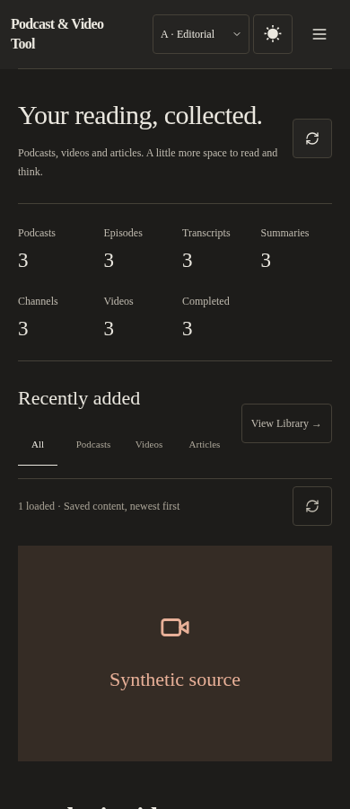
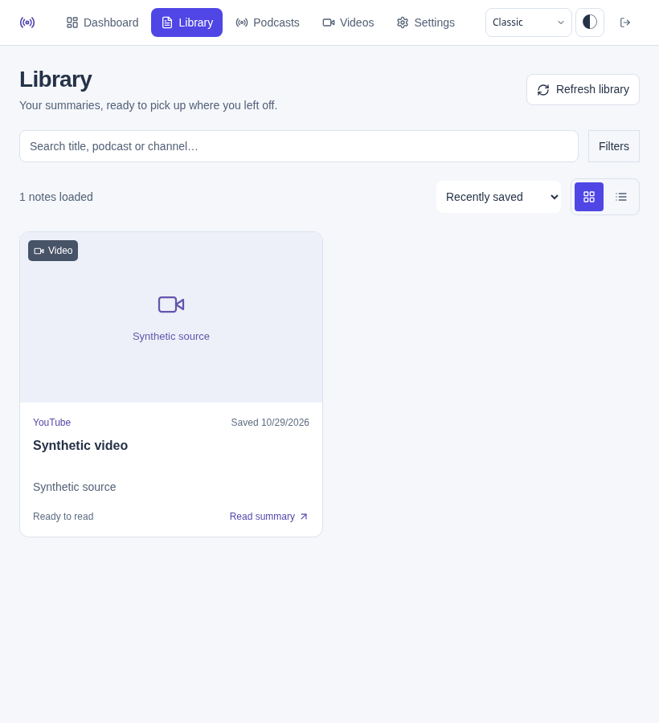
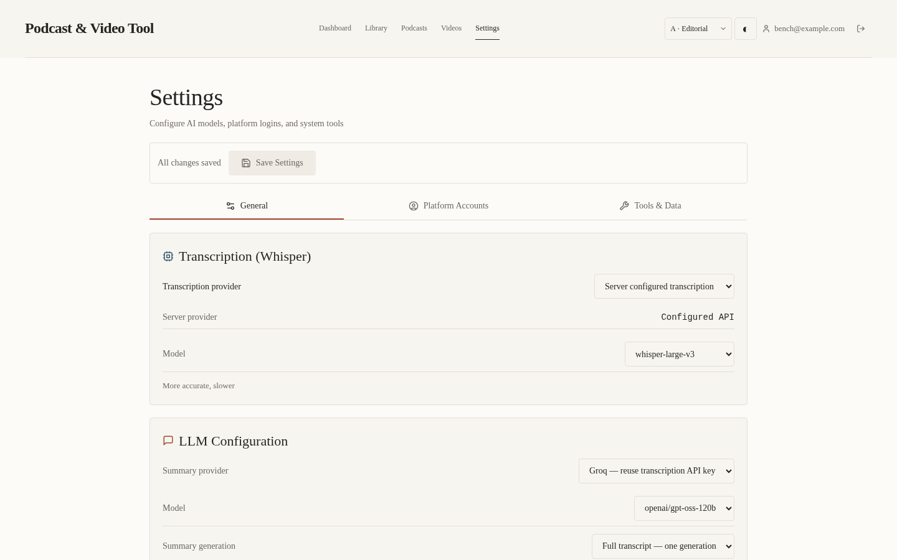
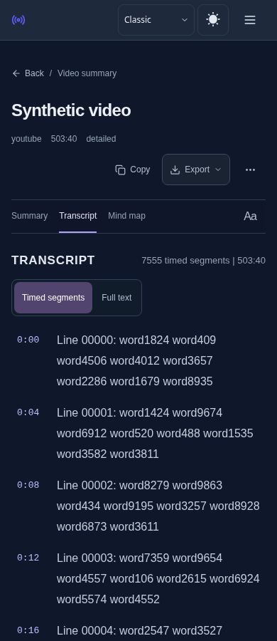

基于 main 8a550bd，独立分支 fix/minor-ui-audit-nov02；已核对开放 PR #210、#211，修改文件无重叠。参考前次 full-ui-audit 记录。
线上站点被环境代理以 CONNECT 403 拦截。本报告为本地生产构建、Chromium、可控合成 API 数据的检查，不是线上视觉验收，也不等同真实 iPad/Safari 验收。未发起真实付费、删除或内容重处理。
复现：Classic 浅/深色摘要页面，在覆盖核对重试进入处理中后，Review in progress… 已禁用却仍呈紫色主按钮。影响：可操作性提示与 Editorial 不一致。仅将禁用状态改用已有中性按钮外观；启用时保留主色。未更改事件、禁用条件、重试或状态流转。


| 区域 | 范围 |
|---|---|
| 首页、Library、设置、播客/频道、摘要 | Classic/Editorial × 浅/深色，390/820/1440px；布局边界、主题切换及状态保持 |
| 摘要、文章、截图、长列表 | 320/390/820px，四种外观；溢出、2018 列表、宽表格、源文控制对比度 |
| 多 P | 320/390/820px，四种外观；稳定边界、选中反馈 |
| 登录、注册、恢复、重置、播客订阅与上传 | 390/820/1440px，四种外观；可控错误、加载及重试反馈，不验证真实认证或外部订阅服务 |
| 任务入口与进度 | 390/1440px；队列、抽屉分组、处理中和完成后的详情读取 |
| 覆盖核对按钮 | 四种外观 × 390/820/1440px 共 12 组；禁用颜色、单次请求、刷新后进度、保留正文 |
| Transcript | 390px Classic 深色，时间段标签与正文展示截图 |
阅读器单测 33 项通过；生产构建通过，初始压缩资源 197.2 KiB，预算 197.25 KiB。具体脚本输出见同目录 *.log。截图人工检查是代表性页面，不声称逐像素检查了每一个状态。




本轮可控场景未确认新的流程问题或必须大改的问题。线上真实数据、跨设备 dismiss 同步、外部认证/付费以及真实任务进度实时性未完成线上验收；合成检查不能证明这些生产行为无误。保留既有布局及操作入口，没有修改流程。